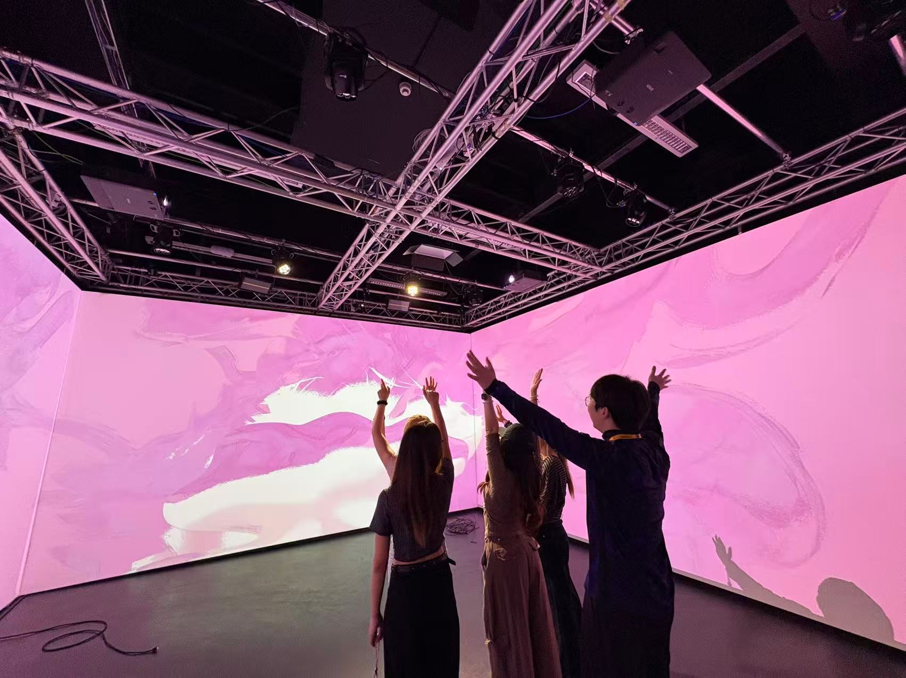

Elysium Wanderaland, 2026.9
Immersive digital hall, gesture interaction
This installation is based on the core sentence of the "Heart Sutra", "Illuminate the Five Aggregates and see that they are all empty, thereby crossing over all sufferings", and explores a contemporary issue: In the digital age, is a sacred contemplative experience necessarily dependent on traditional religious buildings such as temples? When the audience approaches the screen and makes a prayer gesture, the system will recognize this gesture and unlock the corresponding three dimensional digital spaces for the five Buddhist elements (form, feeling, perception, mental formation and consciousness) one by one. Each space remains for seven seconds before automatically switching, and if the hand is released halfway, it will reset immediately. When the audience completes the entire process, all the images and sounds disappear instantly, leaving a black screen and silence, presenting the ultimate state of "emptiness".
该装置以《心经》的核心句子“照见五蕴皆空，度一切苦厄”为基础，探讨一个当代议题：在数字时代，一种神圣的冥想体验是否必然依赖于寺庙等传统宗教建筑？当观众靠近屏幕并做出祈祷手势时，系统将识别这一动作，并逐一解锁与佛教五蕴（色、受、想、行、识）相对应的三维数字空间。每个空间保持七秒钟后自动切换，若手部在中途松开，则立即重置。当观众完成整个过程后，所有图像和声音瞬间消失，留下一片黑色屏幕与寂静，呈现“空性”的终极状态。

